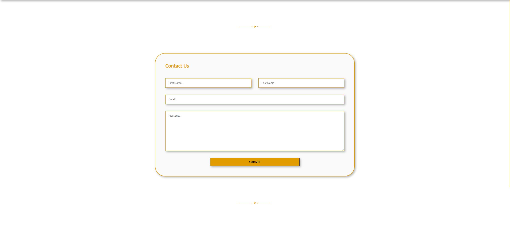

- 
This project was a remake of the first website I ever created during my first year at University as part of my Web Design and Development module. It was remade because I knew it could be significantly improved by implementing the new skills and best practices I have learned. Since it was my first website, it had a lot of messy spaghetti code. It's based on a real place called Sunnycroft, which is a historic property located in Wellington, Shropshire, England. It is a Victorian-era suburban villa that has been preserved and is now open to the public as a museum. Overall, the project was very simple to build as the layout and design were not complex, so it only took me around a week to complete. It was enjoyable revisiting and rebuilding my first-ever website, and it became clear to me just how much I had grown as a developer up to that point. From it, even though the project was simple I improved my HTML structuring, CSS flexbox, and element positioning.
features
- Fully responsive to suit tablet and mobile screens.
- Created using Flex-box.
- Functional drop-down navigation menu.
- Based of a real historical museum.